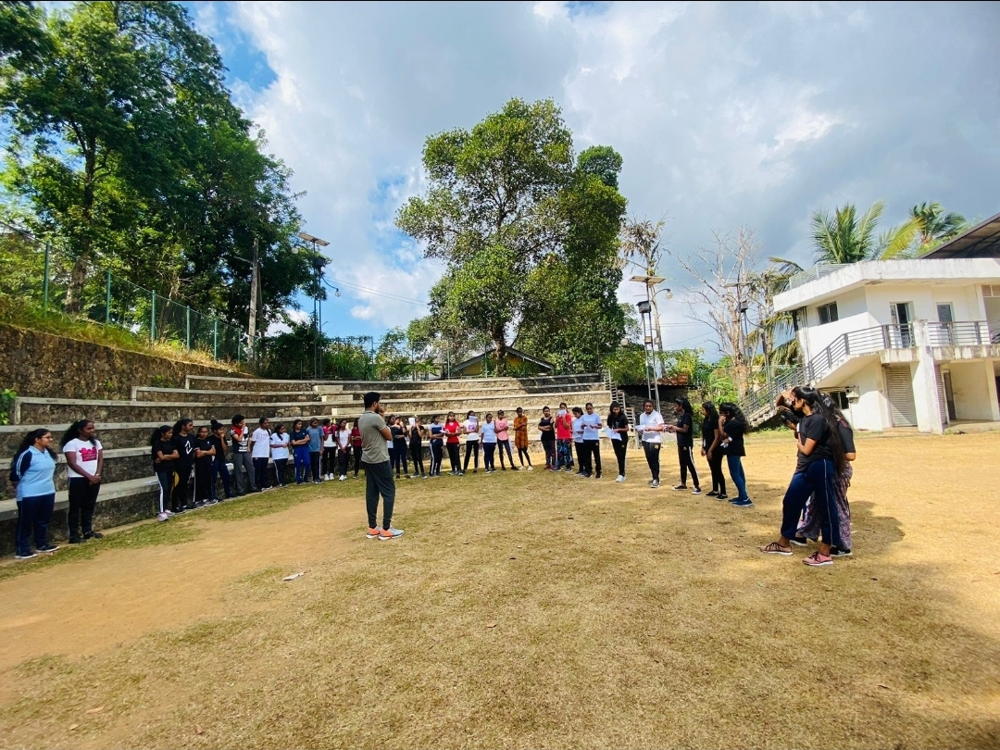
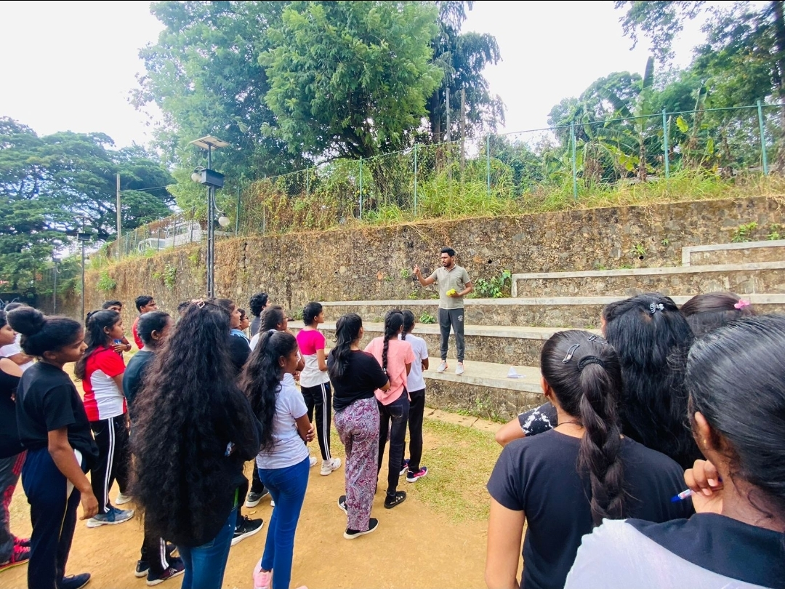
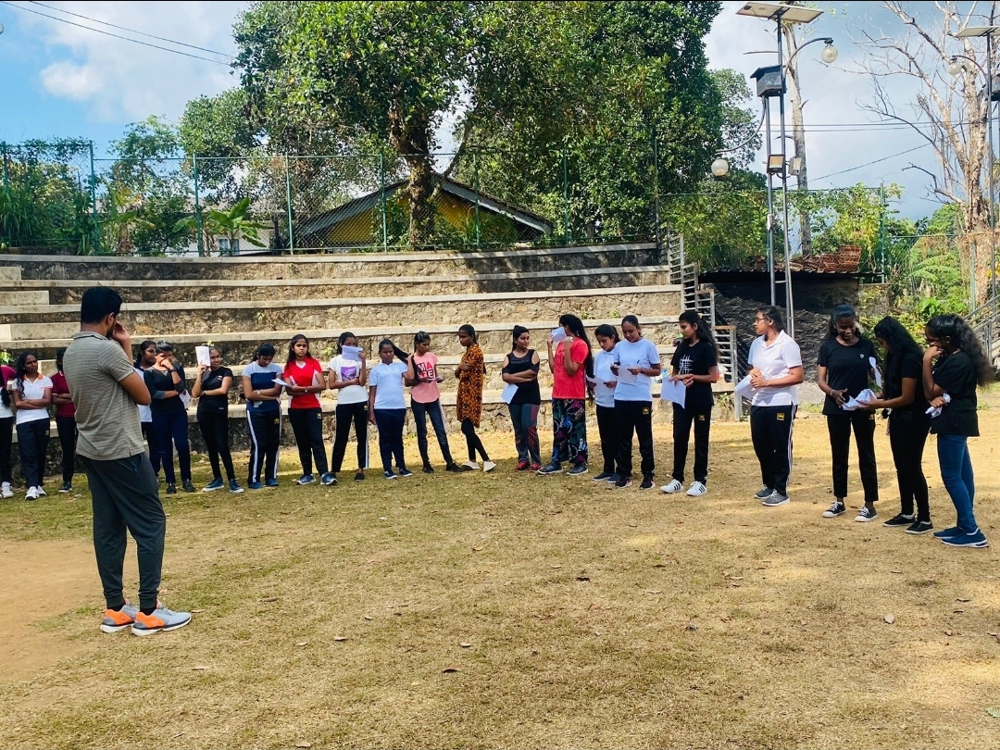

YOUTH DEVELOPMENT / MAY 2024
Developing 21st-Century Skills
A skills development workshop for young people in Sri Lanka.
I facilitated a workshop focusing on competencies relevant to the 21st century. Through outdoor activities and participatory learning, the workshop encouraged active engagement and learning beyond conventional classroom boundaries.
My role: Workshop facilitator.


